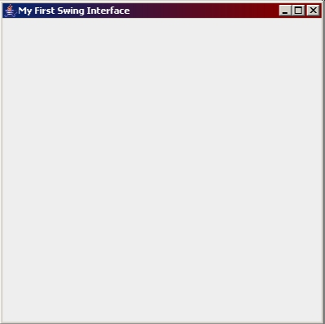
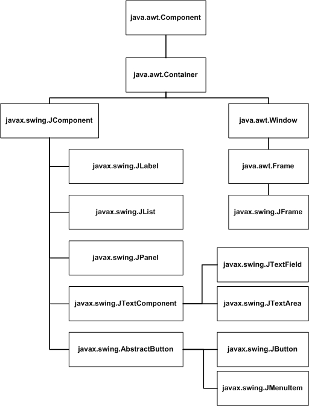
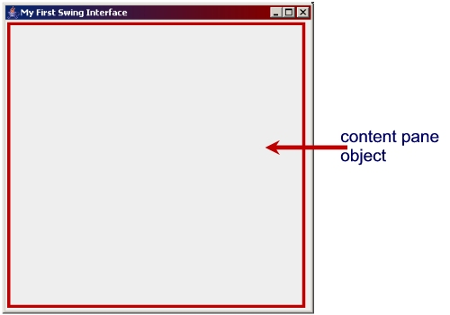
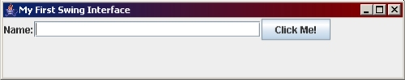

Swing GUI - Introduction
Topics Covered:
Things To Do Before Reading This Section
- Read over Chapter 12 in your textbook.
- Check the following URLs:
Things To Do After Reading This Section
Java GUI
So far we have focused more on programs that used a command-line
interface (CLI) and the console. Now we will begin to focus on
programs that use a graphical user interface (GUI). Some
Java development environments allow you to create a GUI using
drag-and-drop methods, however these interfaces are usually not as
liquid as those that are designed by hand using code. In other words,
you want to make sure that your interface looks professional and is
user-friendly, no matter what kind of monitor it is being displayed
on, or what resolution and screen settings the user has. This is
much easier to do when you code the interface and its components
by hand.
AWT vs. Swing
In older versions of Java (Java 1.1 and lower), GUI's were created
using the AWT (Abstract Windowing Toolkit) components. Chapter 12.2
briefly explains the differences between Swing and AWT
in terms of how components are related to the computer's platform.
It's important to note from reading this chapter that Swing components
are not as platform-dependent as AWT components and that this affects
the reliability and efficiency of your GUI applications. In addition,
it's also important to understand the difference between heavy-weight
components and light-weight components. AWT components are
heavy-weight components because they rely heavily on the platform-specific
components. For example, an AWT button's appearance and even parts of its
functionality are defined based on the button definition on the specific platform where
the application is running. This means on most computers, an AWT button can't
have any transparency, can't have rounded borders, etc. It's limited in
what it can do and how it appears by the platform's definition of the button
component. Most Swing components are light-weight because they don't rely
on the computer's native GUI. A Swing button is painted right on the display
area using Java code, not code that comes from the computer's platform.
Therefore, a Swing component has a lot of extra features, like the ability
to be transparent, and the ability to have rounded borders. A few Swing
components (JApplet, JFrame, and JDialog) are heavy-weight components because
they rely on some of the native GUI code from the operating system.
Swing was released with Java version 1.2 and has undergone many
improvements and additions since that time. There are a variety
of new components, layout managers, and other assorted classes that
we will be using. Because Swing was only included in Java 1.2 and
later, applets written in Swing may not run in some of the older
browsers. In some cases, a plug-in can be added, but some of these
older browsers won't be able to use the plug-in, either. This needs
to be considered when you are writing Swing applets that might be used
in much older browsers. Most browsers today won't have a problem running
Java Applets using Swing. Edited, 2010: This is not as much
a concern today as it used to be, but it's something that you should
still be aware of.
The Java GUI API
The GUI Application Program Interface for Java includes a set of classes
and child classes that are organized in a hierarchy, with common features
and methods being defined in the classes higher up the hierarchy. Figure 12.1
on page 407 of your textbook show portions of this hierarchy.
From reading Chapter 12.1 to 12.3 of your text, you should have an understanding
of the following:
- The three categories or groups of GUI classes
(container, component, helper) and a brief description of the classes
you would find in each.
- Examples of classes from each category.
- The name of the class that is the parent for all the light-weight
Swing components.
- The container classes you would typically use in a Swing application.
- The name of the package where most of the Swing classes reside.
- The name of th package where AWT classes like Color, Font, and Graphics reside.
Creating a Swing Interface
Read Chapter 12.4
The Swing components we will start out using are part of the
javax.swing package (note the x in javax.swing!). You need to
import this package in order to use the basic components we will learn
in this session.
An interface in a GUI program in Java consists of a main "frame"
or window component, plus a variety of other components such as text
fields, labels, and buttons. Check the
Visual
Index to Swing Components to get a better idea as to some of the
other components available.
The frame component is one of many container components
in Java. A container component is an object that contains other
components. For example, the frame component in the image below
contains 3 labels, 3 text fields (the one with a scrollbar is actually
called a text area), and buttons.
 Notice
that a frame component has a title bar, and the min/max/close
buttons. When you create an interface, you have to create your own
version of the frame component. The default frame object has nothing
on it -- it's just a window with a blank surface, a title bar, and the
min/max/close buttons (which already work). We would typically want
our frame to have some text fields and buttons and things on it, so we
need to customize the frame object to look the way we want. We do this
by creating our own frame component. We don't have to code it from
scratch: there's already a frame component in the javax.swing package
called JFrame.
Notice
that a frame component has a title bar, and the min/max/close
buttons. When you create an interface, you have to create your own
version of the frame component. The default frame object has nothing
on it -- it's just a window with a blank surface, a title bar, and the
min/max/close buttons (which already work). We would typically want
our frame to have some text fields and buttons and things on it, so we
need to customize the frame object to look the way we want. We do this
by creating our own frame component. We don't have to code it from
scratch: there's already a frame component in the javax.swing package
called JFrame.
The JFrame class gives you a blank frame or window. We can create
our own frame by inheriting from JFrame and adding additional components
to the frame. Recall that if you create a child object based on or
derived from a parent object, that child will inherit the functionality
of the parent class. If we create a child class of JFrame, we will
inherit all the public methods that are already defined in JFrame,
instead of writing them ourselves. Some of the methods you might find
useful include:
- setTitle(String title) - sets the title of the frame's title bar
- setVisible(boolean b) - makes the frame appear (true) or hide (false)
- setSize(int w, int h) - sets the height and width of the frame
- setLocation(int x, int y) - sets the location of the frame on the screen
- setBounds(int top, int left, int h, int w) - sets the position to (top, left) and the size to h x w
- setLocationRelativeTo() - centres the frame in relation to another component or container. If you use
setLocationRelativeTo(null), the frame is positioned in relation to your monitor/screen.
- setDefaultCloseOperation(int v) - what default action occurs when the user clicks the close button on your frame? The int v parameter can have one of the following constant values:
- JFrame.EXIT_ON_CLOSE - Dispose of window's resources and terminate the program. Use this if you want the close button to act like an "Exit Program" option.
- JFrame.DISPOSE_ON_CLOSE - Dispose of windows resources (any memory it's using), but don't terminate the program. This makes the window disappear but the program is still running.
- JFrame.DO_NOTHING_ON_CLOSE - Do nothing.
- JFrame.HIDE_ON_CLOSE - Same as setVisible(false). The window is still in memory, but it's invisible.
To create the interface, we start by creating a child class of
JFrame. Our child class needs a constructor (usually a default
constructor for simple programs), and in this constructor we need
to make sure we call the parent constructor first. The parent
constructor has code that constructs the frame object and sets some
default values for some of the instance variables of JFrame, so we
need to ensure it executes. We can set the text for the title bar
of our frame by including it as an argument to the parent constructor:
import javax.swing.*;
// creates a child class of JFrame
public class MyFirstSwingInterface extends JFrame
{
// default constructor
public MyFirstSwingInterface()
{
// calls parent constructor and gives that parent
// constructor the text for the title bar
super("My First Swing Interface");
}
}
Once you call the parent constructor, you can add any other code
that customizes your frame object (like adding components to your frame).
For example, you can create text
fields, labels, buttons or other components and lay them out on the
frame. For now, we'll just call the parent constructor, which will
set the title of our frame.
Try typing the necessary code into your editor, and compiling it. Fix any
errors until the program compiles.
This program is actually a class or template for a particular frame
object we've created. This is not an actual program that runs - it
simply models a frame object that we've customized. We need to write
a test class that instantiates our
interface object so we can see what it looks like!
public class MyFirstSwingPgm
{
public static void main(String[] args)
{
MyFirstSwingInterface frame = new MyFirstSwingInterface();
frame.setSize(400, 400);
frame.setLocationRelativeTo(null);
frame.setDefaultCloseOperation(JFrame.EXIT_ON_CLOSE);
frame.setVisible(true);
}
}
The main() method above constructs an instance of your GUI interface
frame class, sets the size of the frame to 400 by 400 pixels,
centres the screen within your own monitor,
sets the default close operation such that the program terminates, and
then sets the frame's visible attribute to true so that the frame is
visible when it is instantiated.
It is important that you set the size of the screen before setting
the location of the screen using setLocationRelativeTo(). When Java
positions the frame in the centre of your monitor, it calculates the
position of the top-left corner of your frame using the size of the frame
and the size of your monitor. Therfore, you need to set the size, first!
Compiling and running this program (make sure it's saved in the same
folder as MyFirstSwingInterface.class) should show something similar to
this:

Don't panic - this is exactly what you should see. It will look a
lot more interesting when we start adding some other Swing
Components, like buttons, textboxes, and lists.
Some Basic Components
We will need to learn how to create a few basic components so we can
start learning to add components to our interface. Recall from Chapter
12.3 that the components
belong to a class hierarchy, allowing components with common features
and functionality to inherit from parent classes further up the hierarchy.
This makes the components more efficient and even easier to use because
there are a lot of common methods:

- Inherited from Component:
- isEnabled() - returns true if a control is enabled or false if the control is disabled. Sometimes you might need to check and see whether or not a control is enabled.
- isVisible() - returns true if the component's visible attribute is true, or false if the component's visible attribute is set to false.
- setSize(int, int) - sets the size of a component to specific width and height integer values.
- Inherited from JComponent:
- setEnabled(boolean) - makes a component enabled (true) or disabled (false). A disabled control is visible, but the text or part of the component may appear to be "greyed out". The user is not able to use controls that are disabled. You might disable a control to prevent them from performing certain actions in the wrong order. For example, you might not want them to click on the "Add" button until they've entered two valid numeric values in two text fields.
- setVisible(boolean) - makes a component visible (true) or invisible (false). You've already used this with the JFrame object. Sometimes you'll want to hide components that aren't really needed in the interface until a later time.
- getSize() - returns the dimensions of a component.
- setBackground()/setForeground() - sets the background or text colour of a component.
- requestFocus()/requestFocusInWindow() - places the cursor or "focus" in/on the component
- setBorder() - adds a border object to the component
- setFont() - change the font of the text in/on the component
- setOpaque() - turns the transparency for the component on or off
- setText() - sets the text in a component.
- getText() - returns the text in a component.
Some components also have additional methods and attributes
(get/set methods!) that are more specific. We'll learn about these
as we learn each of the different kinds of components. We'll start
off with buttons.
Users can use buttons to tell the program to perform a task.
For example, you might have the user enter two numbers, and they
would display the sum of these two numbers by clicking on an "Add"
button. The concept of having a set of statements execute when the
user interacts with a component is called event handling.
For now we will only look at interface and component design -- we will
work on event handling at a later time.
The JButton Class
The JButton class models a button that the user can click on to
perform a task. The JButton class inherits from an abstract class
called AbstractButton. Later, when we do menus, you'll find that a
JMenuItem (an actual item in a menu that you would click on to perform
a task) and a JButton perform very similarly. In order to re-use code,
they are both child classes of AbstractButton.
The JButton constructor takes a String value as an argument.
This value represents the text that appears on the button. For
example, the statement
JButton cmdExit = new JButton("Exit");
creates a JButton object called cmdExit that has the text "Exit"
on it.
The JTextField Class
The JTextField class models a text box, or a field where the user
can type text. A text field is not limited to only characters; the
user can type any displayable characters in a text field. JTextField
(and JTextArea, which we'll look at later) is a child class of
JTextComponent. JTextComponent contains methods and attributes
that are used for components that allow the user to type inputs into
a program.
The JTextField constructors that you might find useful are as
follows:
- JTextField(int size) - specifies the width of
the text box in characters, based on the current font.
- JTextField(String s) - specifies any default text that should
appear in the text box.
- JTextField(String s, int size) - specifes any default text that
should appear in the text box, and the width of the text field in
characters, based on the current font.
You might also find the following methods useful:
- setEditable(boolean) method - if the parameter
is true, it means that the user can type in or edit the contents of
the text field. If the parameter is false, the user can see the text
field and it's contents (if any) but is not allowed to type in or edit
the contents of the text field.
- isEditable() method - returns true if the text field object's
editable attribute is set to true, and false if the text field object's
editable attribute is set to false.
The JLabel Class
The JLabel class models a label that can be used to display text
on the frame. JLabels are often used to display instructions or
messages to the user, or as prompts in front of text fields (so the
user knows what to type in each text field).
There are two constructors that you might find useful with JLabel
objects. One takes a String which represents the text that appears
in the label. The second one takes a string and an integer --
JLabel(String text, int alignment). The int parameter specifies how
the text is aligned in the label. The text can be left-justified,
right-justified, or centred in the label. For example, the following
code creates a JLabel object that says "Enter name:", which is
left-aligned:
JLabel lblNamePrompt = new JLabel("Enter name:", JLabel.LEFT);
You might also find the following methods useful:
- setText(String) - sets the text of the label to the specified
String value.
- setOpaque(boolean) - sets the label's background to opaque
(true) or transparent (false). By default, a label's opaque
attribute is set to false, so if you want to use setBackground()
on a label to change the background colour, you need to
setOpaque(true) first.
Adding Components
Creating your interface in Java involves a lot of planning and
design. You need to decide what components you will need and how they
should be laid out. We will spend quite a bit of time talking about
layout in the next session. For now, we will simply learn a few basic
components, and how a component is added to the interface.
A frame's visible area is divided into sections. For example, we
already know that the title bar section displays some text, such as
the title of the program or the name of the screen the user is viewing.
This text can be set using the JFrame's setTitle() method, or by
passing the title text as an argument to the parent constructor.

The area of the frame where the components are laid out is called the
content pane. The content pane is actually an object which
is part of the JFrame object. All of the other components reside
inside this content pane object. The content pane object is an
instance of the Container class, which is a member of the java.awt
package.
Before Java 5.0, you could only add your components to the content pane
directly, rather than adding them right to the JFrame object. To do this,
you would have to get an instance of the content pane for your frame and
store that in a Container variable, then add the components to it:
Container pane = this.getContentPane();
JButton cmdExit = new JButton("Exit");
pane.add(cmdExit);
In Java 5.0 and later, the JFrame class was modified such that you can
now use the JFrame's add() method, which adds a component to the content
pane for you:
JButton cmdExit = new JButton("Exit");
this.add(cmdExit);
Before we can test this out, we need to change the default layout
manager of the content pane. We won't be learning about Layout
Managers at this time, but we'll learn them soon. We do have to add
a statement to change the layout manager however, because the default
layout manager does not allow us to add more than one component to the
content pane. To change the layout of the content pane, we will use
this statement:
this.setLayout(new FlowLayout(FlowLayout.LEFT, 1, 1));
You'll need to import the java.awt package to use FlowLayout.
In the next section, we'll learn what this statement means. For
now, make sure this statement appears before we add any components to
the content pane.
Exercise
Modify the constructor for your frame object so that it performs
the following tasks:
- Calls the parent constructor, passing up an appropriate title
for the frame's title bar.
- Creates a label, right-aligned, that says "Name:".
- Creates a text field, 25 characters wide.
- Creates a button that says "Click Me!".
- Changes the layout of the frame to a FlowLayout.
- Adds the label to the frame.
- Adds the text field to the frame.
- Adds the button to the frame.
Make sure you set up your main() method in your Main class
to set up and show your GUI:
- Instantiate your frame object.
- Set the size of the frame to 500 x 100 pixels.
- Centre the frame.
- Set the default closing operation of the frame to terminate
the program.
- Make the frame visible.
Try this out and compile it, then run your test class. You should
get something like this:

Try making the following changes:
- Add your name as default text in the text field (so that it
appears there when you run the program) and configure the text field
so that the user can't edit it. Try it out.
- Instead of making your text field in-editable, disable it. How
does it look different? How does it act different (e.g. when you try
to edit it)?
- Configure your button to be disabled. How does the button look
different? What happens when you try to click it?